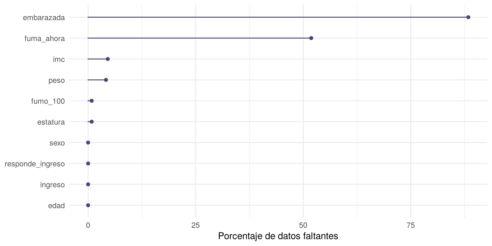
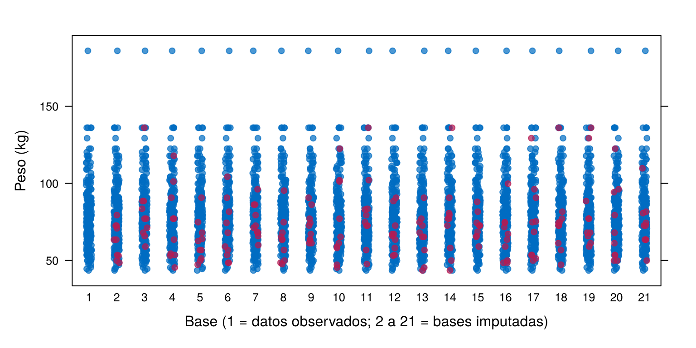

Este caso aplica la página ¿Cómo tratar los datos faltantes? a una encuesta real: cuenta los faltantes, separa los que no son faltantes de verdad, explora su mecanismo, imputa y compara los resultados. Sirve como modelo para los puntos 6 a 8 de la Actividad 1.
Esta página usa los datos riskfactors, incluidos en el
paquete naniar, y los paquetes naniar,
mice y ggplot2. Los bloques de código se
ejecutan en orden.
library(naniar)
library(mice)
library(ggplot2)El Behavioral Risk Factor Surveillance System
(BRFSS) es la encuesta telefónica de salud de los Centros para el
Control y la Prevención de Enfermedades (CDC) de Estados Unidos.
Pregunta a adultos por sus hábitos y su salud (CDC). La tabla
riskfactors es una muestra de 245 personas de la encuesta
de 2009, con 34 variables.
Una secretaría de salud quiere estimar el índice de masa corporal (IMC) promedio y el porcentaje de personas con obesidad (IMC de 30 o más). El IMC se calcula con el peso y la estatura que reporta cada persona, y no todas los reportan.
data("riskfactors")
dim(riskfactors)[1] 245 34Se seleccionan las variables que piden los objetivos. El peso viene en libras y la estatura en pulgadas; se pasan a kilogramos y centímetros.
salud <- data.frame(
sexo = factor(riskfactors$sex, levels = c("Male", "Female"),
labels = c("Hombre", "Mujer")),
edad = riskfactors$age,
peso = round(riskfactors$weight_lbs * 0.4536, 1),
estatura = round(riskfactors$height_inch * 2.54, 1),
imc = riskfactors$bmi,
ingreso = riskfactors$income,
embarazada = factor(riskfactors$pregnant, levels = c("Yes", "No"), labels = c("Sí", "No")),
fumo_100 = factor(riskfactors$smoke_100, levels = c("Yes", "No"), labels = c("Sí", "No")),
fuma_ahora = factor(riskfactors$smoke_days, levels = c("Everyday", "Somedays", "Not@All"),
labels = c("Todos los días", "Algunos días", "Nada"))
)
head(salud) sexo edad peso estatura imc ingreso embarazada fumo_100 fuma_ahora
1 Mujer 49 86.2 162.6 32.68 35-50k <NA> No <NA>
2 Mujer 48 77.1 172.7 25.90 35-50k <NA> No <NA>
3 Mujer 55 73.9 162.6 28.04 <10k <NA> No <NA>
4 Hombre 42 104.3 188.0 29.59 >75k <NA> No <NA>
5 Mujer 66 61.2 157.5 24.74 50-75k <NA> Sí Todos los días
6 Hombre 66 74.8 177.8 23.72 35-50k <NA> No <NA>Tabla 1. Variables seleccionadas.
| Variable | Descripción | Valores |
|---|---|---|
sexo |
Sexo | Hombre, Mujer |
edad |
Edad en años | Número entero |
peso, estatura |
Peso (kg) y estatura (cm) reportados por la persona | Números positivos |
imc |
Índice de masa corporal: peso en kg dividido entre la estatura en metros al cuadrado | Número positivo |
ingreso |
Ingreso anual del hogar, en rangos de dólares | De menos de 10 mil a más de 75 mil; no sabe; no responde |
embarazada |
¿Está embarazada? | Sí, No |
fumo_100 |
¿Ha fumado al menos 100 cigarrillos en su vida? | Sí, No |
fuma_ahora |
¿Con qué frecuencia fuma ahora? | Todos los días, Algunos días, Nada |
El BRFSS solo encuesta a personas de 18 años o más. Por eso se revisan las edades.
sort(salud$edad)[1:6][1] 7 9 9 9 20 21Hay cuatro personas con 7 y 9 años: son errores de registro, y no se puede saber la edad correcta. Se excluyen y se reporta la decisión.
salud <- salud[salud$edad >= 18, ]
nrow(salud)[1] 241Además, el ingreso tiene dos categorías que son faltantes
disfrazados: “Dontknow” (no sabe) y “Refused” (no responde). No aparecen
como NA, así que un conteo con is.na() no las
encuentra (No todos
los faltantes se ven como NA).
table(salud$ingreso)
<10k 10-15k 15-20k 20-25k 25-35k 35-50k 50-75k >75k
10 18 15 19 28 38 32 46
Dontknow Refused
17 18 Se crea una variable que indica si la persona respondió el ingreso, para usarla después.
salud$responde_ingreso <- factor(
ifelse(salud$ingreso %in% c("Dontknow", "Refused"), "No", "Sí"), levels = c("Sí", "No"))
table(salud$responde_ingreso)
Sí No
206 35 faltantes <- data.frame(n = colSums(is.na(salud)),
porcentaje = round(100 * colMeans(is.na(salud)), 1))
faltantes[order(-faltantes$n), ] n porcentaje
embarazada 213 88.4
fuma_ahora 125 51.9
imc 11 4.6
peso 10 4.1
estatura 2 0.8
fumo_100 2 0.8
sexo 0 0.0
edad 0 0.0
ingreso 0 0.0
responde_ingreso 0 0.0gg_miss_var(salud, show_pct = TRUE) +
labs(x = NULL, y = "Porcentaje de datos faltantes") +
theme_minimal()
Porcentaje de datos faltantes por variable
A primera vista, la variable más afectada es embarazada,
con el 88.4 % de faltantes, seguida de fuma_ahora, con el
51.9 %. El peso, la estatura y el IMC tienen menos del 5 %.
No. En una encuesta, muchas preguntas solo se hacen a una parte de
las personas. Un NA en esas preguntas significa “no
aplica”, no “no respondió”.
table(salud$sexo, is.na(salud$embarazada), dnn = c("Sexo", "Falta embarazada")) Falta embarazada
Sexo FALSE TRUE
Hombre 0 90
Mujer 28 123mujeres <- salud[salud$sexo == "Mujer", ]
table(mujeres$edad >= 45, is.na(mujeres$embarazada), dnn = c("45 años o más", "Falta embarazada")) Falta embarazada
45 años o más FALSE TRUE
FALSE 28 0
TRUE 0 123table(salud$fumo_100, is.na(salud$fuma_ahora), dnn = c("Fumó 100 cigarrillos", "Falta fuma_ahora")) Falta fuma_ahora
Fumó 100 cigarrillos FALSE TRUE
Sí 116 0
No 0 123Estos faltantes no se imputan: imputar el embarazo de un hombre no tiene sentido. Se recodifican como una categoría propia.
salud$embarazada <- as.character(salud$embarazada)
salud$embarazada[is.na(salud$embarazada)] <- "No aplica"
salud$fuma_ahora <- as.character(salud$fuma_ahora)
salud$fuma_ahora[is.na(salud$fuma_ahora) & salud$fumo_100 == "No"] <- "No aplica"
colSums(is.na(salud)) sexo edad peso estatura
0 0 10 2
imc ingreso embarazada fumo_100
11 0 0 2
fuma_ahora responde_ingreso
2 0 Después de recodificar, los faltantes de verdad son pocos: 11 en el IMC, 10 en el peso, 2 en la estatura y 2 en el hábito de fumar.
Se siguen los pasos de ¿Cómo se explora el mecanismo?.
Paso 1. Pensar en cómo se recogieron los datos. El IMC se calcula con el peso y la estatura que reporta la persona. Falta cuando la persona no quiso o no supo decir su peso (10 casos) o su estatura (2 casos; una persona no dio ninguno de los dos).
Paso 2. Comparar a quienes tienen el dato con quienes no.
falta_imc <- is.na(salud$imc)
round(100 * tapply(falta_imc, salud$sexo, mean), 1)Hombre Mujer
1.1 6.6 round(100 * tapply(falta_imc, salud$responde_ingreso, mean), 1) Sí No
2.4 17.1 tapply(salud$edad, falta_imc, median)FALSE TRUE
59 63 Hay evidencia contra MCAR: la falta se relaciona con el sexo y con la respuesta del ingreso.
Paso 3. Prueba de Little, como complemento.
mcar_test(data.frame(edad = salud$edad, peso = salud$peso,
estatura = salud$estatura, imc = salud$imc))# A tibble: 1 × 4
statistic df p.value missing.patterns
<dbl> <dbl> <dbl> <int>
1 4.88 5 0.431 4La prueba no rechaza MCAR (valor p de 0.43), pero eso no lo demuestra: con solo 11 faltantes tiene poca potencia, y solo usa variables numéricas, así que no ve el sexo ni la respuesta del ingreso. La comparación del paso 2 pesa más.
Paso 4. Declarar el supuesto.
La falta del IMC se relaciona con el sexo y con no responder el ingreso, variables que están en la base. Se asume MAR y se incluyen esas variables en la imputación. No se puede descartar MNAR: si las personas con más peso tienden a no reportarlo, el IMC promedio estaría subestimado incluso después de imputar.
Con casos completos. Se usan solo las personas con IMC.
completos <- c(media_imc = mean(salud$imc, na.rm = TRUE),
obesidad_pct = 100 * mean(salud$imc >= 30, na.rm = TRUE))
round(completos, 2) media_imc obesidad_pct
27.70 30.87 Con imputación múltiple. Se imputan el peso y la
estatura con mice(), usando el sexo, la edad y la respuesta
del ingreso, y luego se calcula el IMC en cada base imputada. Así el IMC
imputado es coherente con el peso y la estatura.
datos_imp <- salud[, c("sexo", "edad", "responde_ingreso", "peso", "estatura")]
imputacion <- mice(datos_imp, m = 20, method = "pmm", seed = 2026, printFlag = FALSE)media_imc <- with(imputacion, lm(I(peso / (estatura / 100)^2) ~ 1))
summary(pool(media_imc))[, c("estimate", "std.error")] estimate std.error
1 27.60454 0.423917obesidad <- with(imputacion, lm(I(100 * (peso / (estatura / 100)^2 >= 30)) ~ 1))
summary(pool(obesidad))[, c("estimate", "std.error")] estimate std.error
1 29.48133 3.030397stripplot(imputacion, peso ~ .imp, pch = 20, cex = 1.2,
xlab = "Base (1 = datos observados; 2 a 21 = bases imputadas)", ylab = "Peso (kg)")
Peso observado (azul) e imputado (rojo) en las 20 bases
Tabla 2. IMC promedio y porcentaje de obesidad según el tratamiento de los faltantes.
| Método | IMC promedio | Obesidad (%) |
|---|---|---|
| Casos completos (230 personas) | 27.7 | 30.9 |
| Imputación múltiple (241 personas, 20 bases) | 27.6 | 29.5 |
pmm.Que la imputación no cambie el resultado no prueba que el resultado sea correcto. Si los datos fueran MNAR, por ejemplo si quienes pesan más no reportan su peso, las dos estimaciones estarían sesgadas en la misma dirección. Eso se discute como una limitación del estudio.
| Problema | Causa | Solución |
|---|---|---|
| Se imputa el embarazo de los hombres | Se trata un “no aplica” como faltante | Recodificar como “No aplica” |
| La variable con más faltantes parece la más problemática | Los faltantes son estructurales | Revisar a quién se le hizo cada pregunta |
El conteo con is.na() no muestra los
faltantes del ingreso |
Están como “Dontknow” y “Refused” | Revisar las categorías con table() |
| Se concluye MCAR porque Little no rechazó | La prueba tiene poca potencia y solo usa variables numéricas | Comparar grupos, como en el paso 2 |
| El IMC imputado no coincide con el peso y la estatura | Se imputó el IMC por separado | Imputar el peso y la estatura y calcular el IMC |
| Se elimina a las personas de 7 y 9 años sin decirlo | Se depura en silencio | Reportar cuántos registros se excluyen y por qué |
En riskfactors, la variable drink_days
(días al mes que toma alcohol) tiene muchos faltantes. ¿Son “no aplica”?
Use la variable drink_any.
table(riskfactors$drink_any, is.na(riskfactors$drink_days), useNA = "ifany",
dnn = c("Toma alcohol", "Falta drink_days")) Falta drink_days
Toma alcohol FALSE TRUE
Yes 111 0
No 0 132
<NA> 0 2Falta en todas las personas que respondieron que no toman alcohol: es
“no aplica”. Las dos personas que no respondieron drink_any
tampoco tienen drink_days; esos sí son faltantes de
verdad.
Impute el IMC con la media y compare su desviación estándar con la de los casos completos.
imc_media <- salud$imc
imc_media[is.na(imc_media)] <- mean(salud$imc, na.rm = TRUE)
round(c(casos_completos = sd(salud$imc, na.rm = TRUE), imputado_media = sd(imc_media)), 2)casos_completos imputado_media
6.43 6.28 La desviación estándar baja, porque los 11 valores imputados son iguales a la media. Con pocos faltantes el efecto es pequeño, pero crece con el porcentaje de faltantes.
Suponga que la falta del IMC no se relacionara con ninguna variable de la base y que la prueba de Little no rechazara. Redacte el supuesto que adoptaría.
Por ejemplo: “No se encontró relación entre la falta del IMC y las variables de la base, y la prueba de Little no rechazó MCAR. Se asume MCAR y se analizan los casos completos. El supuesto no se puede demostrar: si la falta dependiera del propio peso, los resultados estarían sesgados”.
Última revisión: 13 de noviembre de 2026.